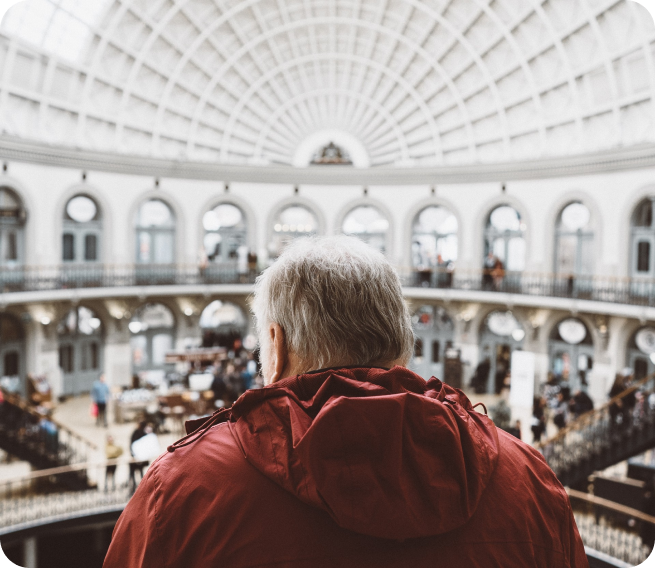
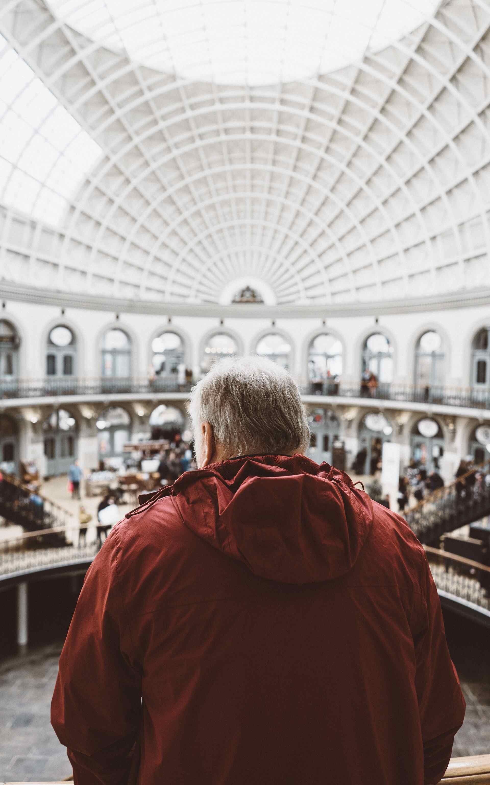

Location
The museum is located at Sydnesgaten 54.
Admission
The entrance is free for all. There are guided tours of the museum that leave every hour.
These tours are 70 NOK per person and include a handy printed guide of the museum. If you
would like to organise a guided tour for your group of 6 or more people, please contact us
to arrange the tour.
Location
The museum is located at Sydnesgaten 54.
Admission
The entrance is free for all. There are guided tours of the museum that leave every
hour. These tours are 70 NOK per person and include a handy printed guide of the
museum. If you would like to organise a guided tour for your group of 6 or more people,
please contact us to arrange the tour.
Hours
Monday: Closed
Tuesday: 10:00 – 16:00
Wednesday: 10:00 – 16:00
Thursday: 10:00 – 16:00
Friday: 10:00 – 19:00
Saturday: 9:00 – 16:00
Sunday: 9:00 – 13:00
Accessibility
The museum has wheelchair accessibility ramps. It also has audio guides and braille
display signs for the visually impaired.
Food and drink
There is a café attached to the museum where you can get light lunches, soft drinks,
coffee, snacks and more.
Shop
Our shop offers a range of memorabilia from the museum as well as great gifts and
activity packs that allow you to continue to explore science even after you’ve left the
museum.

Hours
Monday: Closed
Tuesday: 10:00 – 16:00
Wednesday: 10:00 – 16:00
Thursday: 10:00 – 16:00
Friday: 10:00 – 19:00
Saturday: 9:00 – 16:00
Sunday: 9:00 – 13:00
Accessibility
The museum has wheelchair accessibility ramps. It also has audio guides and braille
display signs for the visually impaired.
Food and drink
There is a café attached to the museum where you can get light lunches, soft drinks,
coffee, snacks and more.
Shop
Our shop offers a range of memorabilia from the museum as well as great gifts and
activity packs that allow you to continue to explore science even after you’ve left the
museum.
